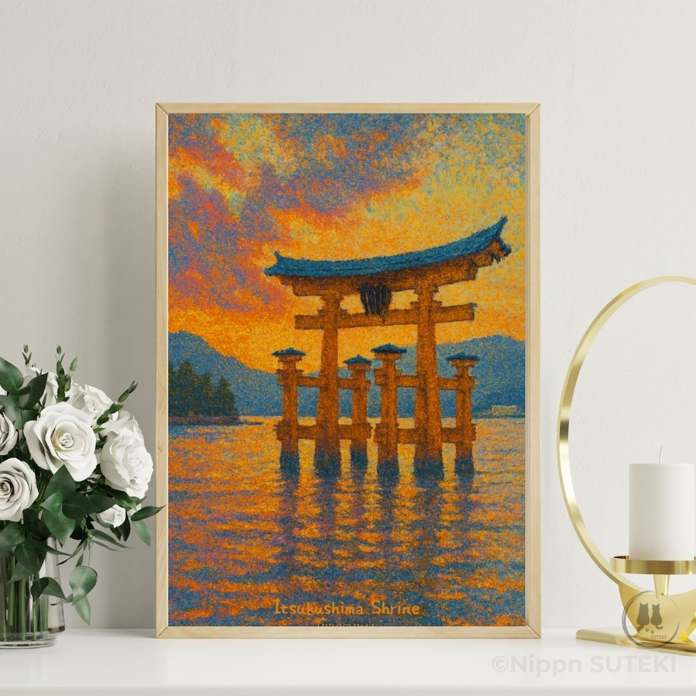
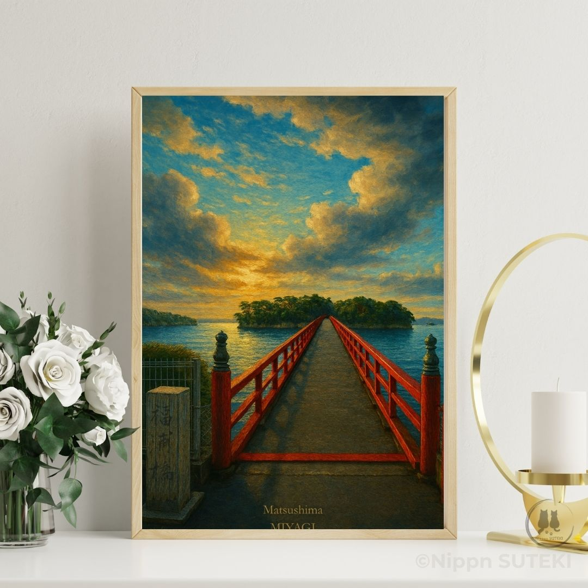

Enter Sari’s Perspective
A quiet moment where what you see and what it means begin to drift apart.
It looks quiet. Soft. Almost delicate in spring.
Cherry blossoms drift across stone walls that have stood for centuries.
And yet, for over 400 years, this place has been called something else.
Carp Castle.
A name that doesn’t quite match what you see at first glance.
From Instagram? Tap the artwork below to view the poster on Etsy.
Shop This Artwork on EtsyTwo curious cat sisters explore Japan’s landscapes — each discovering a different meaning hidden within the same scene.
A quiet moment where what you see and what it means begin to drift apart.

The hidden reason behind the name — history, symbols, and what remained after loss.
Art posters inspired by Japan’s most beautiful places

Hiroshima — Where Culture Meets Worship
Matsushima — Where Beauty Hides a Story Amanohashidate — The Bridge Between Sea and Sky
Amanohashidate — The Bridge Between Sea and Sky
We share Japan not as tourists, but as people who live within its seasons.
Each artwork begins with a feeling — a quiet moment we Japanese call “SUTEKI”.
Our philosophy is simple: art should gently blend into your space, bringing calm rather than noise.